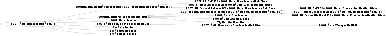

class ROOT::Math::IBaseFunctionMultiDim
Documentation for the abstract class IBaseFunctionMultiDim.
Interface (abstract class) for generic functions objects of multi-dimension
Provides a method to evaluate the function given a vector of coordinate values,
by implementing operator() (const double *).
In addition it defines the interface for copying functions via the pure virtual method Clone()
and the interface for getting the function dimension via the NDim() method.
Derived classes must implement the pure private virtual method DoEval(const double *) for the
function evaluation in addition to NDim() and Clone().
@ingroup GenFunc
This class is also known as (typedefs to this class)
ROOT::Math::BasicFitMethodFunction<ROOT::Math::IBaseFunctionMultiDim>::BaseFunction, ROOT::Math::IParametricGradFunctionMultiDim::BaseFunc, ROOT::Fit::LogLikelihoodFCN<ROOT::Math::IBaseFunctionMultiDim>::BaseFunction, ROOT::Math::IParametricFunctionMultiDim::BaseFunc, ROOT::Math::Functor::Impl, ROOT::Math::Functor::ImplBase, ROOT::Fit::LogLikelihoodFCN<ROOT::Math::IGradientFunctionMultiDim>::BaseFunction, ROOT::Fit::PoissonLikelihoodFCN<ROOT::Math::IBaseFunctionMultiDim>::BaseFunction, ROOT::Fit::Chi2FCN<ROOT::Math::IGradientFunctionMultiDim>::BaseFunction, ROOT::Fit::Chi2FCN<ROOT::Math::IBaseFunctionMultiDim>::BaseFunction, ROOT::Math::GradFunctor::ImplBase, ROOT::Math::BasicFitMethodFunction<ROOT::Math::IGradientFunctionMultiDim>::BaseFunction, ROOT::Fit::Fitter::BaseFunc, ROOT::Math::IGradientFunctionMultiDim::BaseFunc, ROOT::Fit::PoissonLikelihoodFCN<ROOT::Math::IGradientFunctionMultiDim>::BaseFunction, ROOT::Math::IMultiGenFunction, ROOT::Math::WrappedMultiTF1::BaseFunc, ROOT::Math::IBaseFunctionMultiDim::BaseFuncFunction Members (Methods)
This is an abstract class, constructors will not be documented.
Look at the header to check for available constructors.
public:
| virtual | ~IBaseFunctionMultiDim() |
| virtual ROOT::Math::IBaseFunctionMultiDim* | Clone() const |
| virtual unsigned int | NDim() const |
| double | operator()(const double* x) const |
| ROOT::Math::IBaseFunctionMultiDim& | operator=(const ROOT::Math::IBaseFunctionMultiDim&) |
private:
| virtual double | DoEval(const double* x) const |
Class Charts
{kind=link}
{kind=link}
{kind=link}
{kind=link}

Function documentation
IBaseFunctionMultiDim * Clone() const
double operator()(const double* x) const
Evaluate the function at a point x[].
Use the pure virtual private method DoEval which must be implemented by the sub-classes
return DoEval(x)